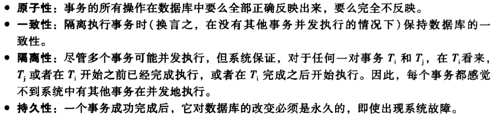

[数据库系统概念]:事务
事务 & ACID
事务
事务是一个访问并可能更新数据项的一个程序执行单元，在SQL语句中，由
begin transaction和end transaction之间的全部操作组成ACID
数据库有着四大特性，被称为ACID特性

原子性与持久性
事务状态机
活跃(active)
当一个事务开始执行时，就处于active状态
部分提交(partially commited)
当事务中的最后一条语句被执行之后，事务处于部分提交状态
失效(failed)
当事务不能继续正常执行时
中止(aborted)
当事务已经回滚并且数据库已经恢复到它在事务开始前的状态
提交(commited)
事务执行成功
当事务处于中止状态或者提交状态时，也被称为**终止(terminated)**状态
回滚
当一个中止的事务造成的变更已经被撤销，我们就说该事务已回滚(roalled back),通常是通过维护日志来达到这一个目的
当事务处于中止状态时，有两种方式对其进行处理
重启
当引起事务中止的原因是由于硬件错误，就可以重启事务，重启的事务被看成一个新事务
杀死
如果事务中止的原因是由于内部的逻辑错误，那么就只能杀死事务了，因为重启之后依旧会导致事务中止
事务的隔离性与原子性
允许多个事务并发地执行会引起许多数据一致性的复杂问题，如果坚持事务是串行执行的话将简单的多，但是并发执行可以很大程度上提高吞吐量，减少延迟，这导致有些数据库放弃了隔离性，允许事务并发执行
调度
在允许并发执行的系统当中，如果一个事务$T_i$失效了，原子性要求依赖于$T_i$的任何事务$T_j$也要终止
为了确保这一点，需要控制系统中所允许调度的类型
可/不可恢复调度
考虑如下调度
如果在$T_6$执行完
read(B)之后$T_6$终止，由于$T_7$读取了$T_6$所写入的数据，即$T_7$依赖于$T_6$,因此$T_7$也需要被终止，但是$T_7$已经commit,所以他不能够再终止，即这是一个不可恢复调度下面给出可恢复调度的定义:
对于每对事物$T_i$和$T_j$,如果$T_j$读取了由$T_i$之前所写过的数据项，则$T_i$的提交操作应该出现在$T_j$的提交操作之前
无级联调度
有时可能会发生多重依赖的情况
在上面的例子当中，$T_8$终止导致$T_9$终止，$T_9$终止导致$T_10$终止，这种由于单个事务失效导致一系列事务回滚的现象被称为级联回滚，这在数据库中时不希望发生的，因为要消耗大量的工作
下面给出无级联调度
对于每对事物$T_i$和$T_j$都满足如果$T_j$读取了之前由$T_i$所写的一个数据项，则$T_i$的提交操作必须出现在$T_j$的这一读操作之前
并发执行中可能产生的问题
脏读
脏读指一个事务读取了另一个事务未提交的数据
不可重复读
不可重复读指在一个事务内读取表中的某一行数据，多次读取结果不同。 不可重复读和脏读的区别是，脏读是读取前一事务未提交的脏数据，不可重复读是重新读取了前一事务已提交的数据
幻读
幻读指读取到了别的事务插入的数据，导致前后数据量不一致
隔离级别
SQL标准定义了四个隔离级别
Read Uncommited(未提交读)
允许读取未提交数据，可能会引发
脏读,不可重复读,幻读Read Commited(已提交读)
只允许读取已经提交的数据，可能会引发
不可重复读,幻读Repeatable Read(可重复读)
只允许读取已经提交的数据，并且进一步要求在一个事务两次读取一个数据项期间，其他事务不得更新该数据项，可能会引发
幻读Serializable(可串行化)
保证串行化的执行，但是一些数据库可能会使用并行方式执行，不会产生上面的任何一个问题
本博客所有文章除特别声明外，均采用 CC BY-SA 4.0 协议 ，转载请注明出处！